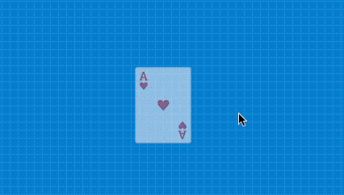

Ми називаємо "подіями" сигнали, які утворюють такі пристрої, як миша або клавіатура. Наприклад, "click" (натискання) - є подією миші, як і натискання клавіші.
І найкрутіша річ у подіях полягає в тому, що ми можемо їх фіксувати та запускати певні дії в грі, щоб реагувати на них. Наприклад, у грі натискання миші може спричинити вибух або призвести до стрибка персонажу.
Незважаючи на те, що в цьому розділі йдеться про події та використання миші, ви майже завжди хочете знати положення вказівника миші, щоб переміщувати акторів або створювати об’єкти. Якщо це ваш випадок, то ви можете використовувати 4 параметри, щоб завжди знати, у якому положенні знаходиться вказівник миші:
І ці параметри, як правило, можна використовувати безпосередньо з функції "actualizar" (оновлення) акторів:
class actor extends Actor {
iniciar() {}
actualizar() {
// наведені нижче твердження змушують актора слідувати
// у положення вказівника миші
this.x = this.pilas.cursor_x;
this.y = this.pilas.cursor_y;
}
}Щоб зафіксувати подію від миші, вам просто потрібно оголосити одну з цих функцій у коді:
Ці функції можуть бути створені в коді сцени або актора. Різниця полягає в тому, що в сценах "натискання" або рух буде виявлено на всьому екрані, тоді як у коді актора лише тоді, якщо миша вкаже на актора.
Якщо від актора вам потрібно розпізнати клацання миші на екрані, вам слід скористатися іншим методом:
чи:
Уявіть, що ми хочемо створювати акторів класу "Pelota" (м’яч) кожного разу, коли користувач робить "click" по екрану. Ми могли б зробити це, розмістивши цей код у сцені:
class escena2 extends Escena {
iniciar() {}
actualizar() {}
cuando_mueve(x, y, evento_original) {}
cuando_hace_click(x, y, evento_original) {
let pelota = this.pilas.actores.pelota();
pelota.x = x;
pelota.y = y;
}
}Якщо ви хочете, щоб актор перестав реагувати на натискання, вам не потрібно видаляти цю функцію cuando_hace_click, замість цього ви можете викликати наступну функцію:
this.desactivar_clicks();Коли актора просять вимкнути його натискання, події click будуть передані актору, який стоїть за ним. Не буде викликана функція cuando_hace_click і ви також не зможете перетягнути цього актора.
Якщо потрібно знову ввімкнути натискання, вам слід викликати цю функцію:
this.activar_clicks();Перегляньте приклад, який називається "desactivar-clicks", в якому демонструється, як використовувати цю функцію.
Щоб зафіксувати події в контексті актора, ми повинні використовувати ті самі функції, але оголосити їх у коді актора.
Наприклад, уявіть, що ми створюємо карткову гру і хочемо, щоб картку можна було обертати натисканням миші та змінювати прозорість, коли миша на неї наведена:

Код актора має бути приблизно таким:
class actor extends Actor {
propiedades = {};
iniciar() {
this.transparencia = 50;
}
actualizar() {}
cuando_mueve(x, y, evento_original) {
this.escala = 1.2;
this.transparencia = 0;
}
cuando_sale(x, y, evento_original) {
this.transparencia = 50;
this.escala = 1;
}
cuando_hace_click(x, y, evento_original) {
this.rotacion = [360];
}
cuando_termina_de_hacer_click(x, y, evento_original) {}
}Обробники подій, як cuando_mueve, cuando_sale і cuando_hace_click будуть викликані всередині, коли ці події відбуватимуться на акторі.
Ще один складніший спосіб фіксації подій - використання модуля eventos сцени.
pilas.eventos.conectar("mueve_mouse", (x, y) => {
console.log("mueve", x, y);
});
pilas.eventos.conectar("click_de_mouse", (x, y) => {
console.log("mueve", x, y);
});
pilas.eventos.conectar("termina_click", (x, y) => {
console.log("mueve", x, y);
});Це повний список подій:
mueve_mouse: x, yclick_de_mouse: x, y, boton_izquierdo, boton_derechotermina_click: x, y, boton_izquierdo, boton_derecho